Персонажи и титулы
В игре есть четыре различных персонажа, каждый из которых может получить три продвижения, или титула. Для того, что бы получить очередной титул, ваш герой должен выполнить задание короля Максимуса: победить по контракту некоторое число злодеев. Исполнив требуемое, можно возвращаться к королю и требовать повышения.
При продвижении персонаж получает солидные прибавки к лидерству, доходу и магическим навыкам. Персонажи отличаются друг от друга именно соотношением этих прибавок - например, у Рыцаря наибольшая прибавка к параметру leadership, а у Чародейки - к магическим навыкам. Подробности в таблицах ниже.
Рыцарь (Knight) 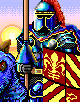
| | Knight | General | Marshall | Lord |
| Wins | - | 2 | 6 | 6 |
| Leadership | 100 | +100 | +300 | +500 |
| Income | 1000 | +1000 | +2000 | +4000 |
| Spell power | 1 | +1 | +1 | +2 |
| Knowledge | 2 | +2 | +4 | +5 |
Паладин (Paladin) 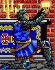
| | Paladin | Crusader | Avenger | Champion |
| Wins | - | 2 | 5 | 6 |
| Leadership | 80 | +80 | +240 | +800 |
| Income | 1000 | +1000 | +2000 | +4000 |
| Spell power | 1 | +2 | +2 | +2 |
| Knowledge | 3 | +4 | +5 | +12 |
Чародейка (Sorceress) 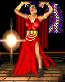
| | Sorceress | Magician | Mage | Archmage |
| Wins | - | 3 | 3 | 6 |
| Leadership | 60 | +60 | +180 | +300 |
| Income | 3000 | +1000 | +1000 | +1000 |
| Spell power | 2 | +3 | +5 | +5 |
| Knowledge | 5 | +8 | +10 | +12 |
Варвар (Barbarian) 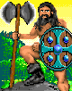
| | Barbarian | Chieftan | Warlord | Overlord |
| Wins | - | 1 | 4 | 5 |
| Leadership | 100 | +100 | +300 | +500 |
| Income | 2000 | +2000 | +2000 | +2000 |
| Spell power | 0 | +1 | +1 | +1 |
| Knowledge | 2 | +2 | +3 | +3 |
ЗЛОДЕИ: Continentia
Murray the Miser

Прозвище: Нет
Награда: 5000
Приметы: Ветхая, изношенная одежда, парик, прячущий лысину. Непрерывный кашель.
Вина: Разыскивается за множество мелких преступлений, особенно за измену - с его помощью группа пиратов проникла в замок.
Армия: 28 wolves, 39 militia, 68 peasants, 59 peasants, 83 peasants.
Hack the Rogue
Прозвище: The Spitter
Награда: 6000
Приметы: Bushy ebon Beard stained with tobacco juice, numerous battle scars, brash, arrogant behaviour.
Вина: Along with many minor infractions Hack is wanted for conspiracy against the crown and for, grave-robbing.
Армия: 35 militia, 34 militia, 14 nomads, 101 peasants, 79 peasants.
Princess Aimoila
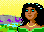
Прозвище: Lady Deceit
Награда: 7000
Приметы: Excessive use of make-up to hide aging features, ever-present lace handkerchief.
Вина: The princess violated her status as a visiting dignitary by encouraging a murder and joining the conspiracy against the crown.
Армия: 50 sprites, 74 sprites, 20 skeletons, 22 zombies, 6 ogres.
Baron Johnno Makahl
Прозвище: Johnno
Награда: 8000
Приметы: Expensive and gaudy clothes, scruffy beard and overweight.
Вина: Johnno is wanted for various crimes against the kingdom, including leading a direct assault against the crown and conspiracy.
Армия: 23 orcs, 17 archers, 5 trolls, 14 dwarves, 36 wolves.
Dread Pirate Rob
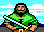
Прозвище: Terror of the sea
Награда: 9000
Приметы: Pencil thin moustache and elegantly trimmed beard, never without a rapier.
Вина: Rob is wanted for piracy as well as conspiracy and for breaking out five traitors sentenced to death in the royal dungeons.
Армия: 69 militia, 62 militia, 16 archers, 13 elves, 5 barbarians.
Caneghor the Mystic
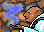
Прозвище: The Majestic Sage
Награда: 10000
Приметы: Voluminous robes, bald head, magic symbols engraved on body, levitating ability.
Вина: Caneghor is wanted for grave robbing, conspiracy against the crown and for plundering the royal library.
Армия: 13 ghosts, 267 sprites, 10 knights, 6 archmages, 7 archmages.
ЗЛОДЕИ: Forestria
Sir Moradon the Cruel
Прозвище: Нет
Награда: 12000
Приметы: Always wearing armor and concealed weapons, has twoprominent front teeth and an unkept beard.
Вина: Sir moradon, from another land is wanted for his part in a conspiracy to topple the kingdom.
Армия: 29 archers, 21 pikemen, 115 militia, 18 cavalry, 16 knights.
Prince Barrowpine
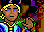
Прозвище: The Elf Lord
Награда: 14000
Приметы: Pointed ears, sharp elfin features, pale blue eyes with no whites, glimmering enchanted coin.
Вина: The prince is one of the leaders of the conspiracy against the crown. He also traffics stolen artifacts.
Армия: 33 archmages, 13 druids, 313 sprites, 35 pikemen, 30 elves.
Bargash Eyesore

Прозвище: Old One Eye
Награда: 16000
Приметы: Single eye in center of head, over ten feet tall, only hair on body is beard.
Вина: Bargash is wanted for conspiracy against the crown andfor leading an outright attack against the king.
Армия: 20 ogres, 15 trolls, 7 giants, 94 wolves, 160 orcs.
Rinaldus Drybone
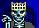
Прозвище: The Death Lord
Награда: 18000
Приметы: Rinaldus is a magically animated skeleton, an undead, he is easily identified by the crown he wears.
Вина: Rinaldus is wanted for leading a conspiracy against the crown andleading a rebellion on the continent of saharia.
Армия: 112 zombies, 520 skeletons, 33 ghosts, 14 vampires, 8 demons.
ЗЛОДЕИ: Archipelia
Ragface
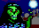
Прозвище: Нет
Награда: 20000
Приметы: Ragface is an undead, he is covered from head to toe in moldering green strips of cloth, a rotting smell follows him.
Вина: Conspiracy against the crown and leading an insurrection in saharia.
Армия: 222 zombies, 645 skeletons, 53 ghosts, 31 vampires, 10 demons.
Mahk Bellowspeak
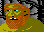
Прозвище: Bruiser
Награда: 25000
Приметы: Bright orange body hair on a fluorescent green body. a tendency to shout for no apparent reason.
Вина: Mahk is wanted for the conspiracy against the crown, leading a jail break and for piracy on the open seas.
Армия: 8 dragons, 32 giants, 30 ogres, 219 orcs, 218 gnomes.
Auric Whiteskin
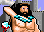
Прозвище: The Barbariane
Награда: 30000
Приметы: Auric is heavily muscled and wears a protective skin made from the hides of baby lambs.
Вина: Auric is wanted for conspiracy and for leading the rebellion of the continent Saharia.
Армия: 45 barbarians, 23 giants, 321 gnomes, 107 nomads, 763 peasants.
Czar Nikolai the Mad
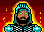
Прозвище: The Mad Czar
Награда: 35000
Приметы: The czar has eyes which change colour constantly, he also has a sulphur smell emanating from his body.
Вина: The czar is wanted for leading a conspiracy against the crown for violating diplomatic immunity and for murder.
Армия: 110 pikemen, 46 archers, 85 cavalry, 64 knights, 6 dragons.
ЗЛОДЕИ: Saharia
Magus Deathspell
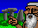
Прозвище: Нет
Награда: 40000
Приметы: Pupil-less eyes, white beard, always wears crimson robes and a matching Skull cap.
Вина: Magus is wanted for conspiracy against the crown and for practising forbidden magics.
Армия: 60 vampires, 107 archmages, 33 demons, 544 gnomes, 5183 peasants.
Urthrax Killspite
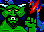
Прозвище: The Demon King
Награда: 45000
Приметы: Green, Skaly skin, over 7 feet tall, horns protruding from side of head.
Вина: Urthrax is wanted for conspiracy against the crown.
Армия: 13 dragons, 217 cavalry, 54 demons, 261 knights, 62 archmages.
Arech Dragonbreath
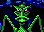
Прозвище: Mastermind
Награда: 50000
Приметы: Arech is an immense dragon with a green body and blue wings, he breathes fire.
Вина: Arech is wanted for the conspiracy against the crown, arraging jailbreaks, formenting rebellion, stealing the sceptre of order.
Армия: 25 dragons, 26 dragons, 102 dragons, 105 demons, 107 vampires.
Примечания: Количественный состав армий дан приблизительный, т.к. во время недельного прироста существ не только восстанавливаются Жилища, но и немного увеличивается численость всех гарнизонов.